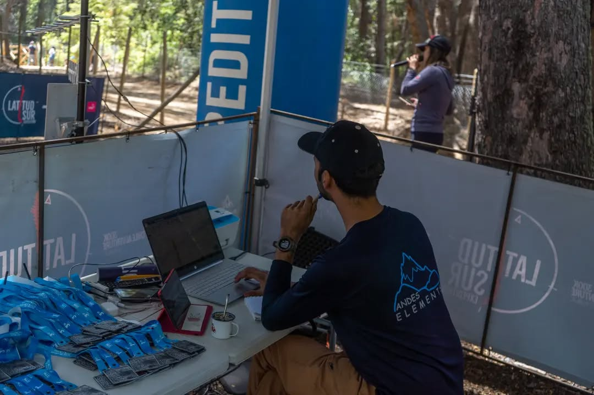

01
Terreno
Turismo, espacios naturales, logística outdoor, senderos y producción de actividades deportivas.
Territorio, experiencia y una forma de hacer las cosas.
Ingeniero en Expediciones y Ecoturismo. Experiencia en operaciones outdoor, producción deportiva, coordinación y herramientas de gestión.
Mi experiencia comienza en el terreno y se extiende hacia la organización de equipos, procesos y proyectos.
He trabajado en contextos donde la planificación debe responder a condiciones reales: actividades outdoor, eventos deportivos, operación de espacios naturales y coordinación de recursos. Desde esa experiencia, incorporo herramientas digitales y metodologías de gestión para abordar problemas concretos.
No concibo estas áreas como especialidades aisladas, sino como formas complementarias de comprender y ejecutar un trabajo.
Experiencia práctica, organización y adaptación de herramientas según las necesidades de cada contexto.
Turismo, espacios naturales, logística outdoor, senderos y producción de actividades deportivas.
Coordinación operativa, planificación, recursos, mejora de procesos y proyectos.
Cronometraje deportivo, gestión de información, herramientas digitales y sistemas de apoyo.
Una selección de actividades y responsabilidades. Los períodos de colaboración por evento no implican dedicación continua.
Coordinación y apoyo logístico en competencias de ciclismo y eventos al aire libre, con participaciones según calendario de cada organización.
Operación de herramientas de control de tiempos, seguimiento de participantes y publicación de resultados en competencias.
Apoyo a iniciativas de modernización de procesos y uso de herramientas digitales, incluido Odoo ERP.
Coordinación operativa en entorno natural, atención de visitantes, senderos y gestión de actividades de terreno.
Docencia y actividades prácticas vinculadas al turismo y las expediciones. 947 horas pedagógicas acreditadas en el período.
Exploración y trazado de senderos, con atención a las condiciones del territorio y el uso turístico.
Dos líneas de trabajo que reflejan mi experiencia e intereses. Los casos detallados se incorporarán progresivamente.

Logística, coordinación y trabajo en condiciones reales, desde actividades en áreas naturales hasta competencias deportivas.
Experiencia aplicada
Fotografía y video en desarrollo, con interés en el deporte, la naturaleza y el registro de experiencias.
Ver registro audiovisualExperiencia en cronometraje deportivo y gestión de resultados. Ver evidencia de experiencia ↗
Pontificia Universidad Católica de Chile · Clase Ejecutiva UC
Finalizado · Certificación pendienteUniversidad del Desarrollo · 136 horas
Universidad San Sebastián · Mención Geoturismo
Formación complementaria en respuesta a emergencias en entornos remotos (WFR), primeros auxilios y operación RPAS.
Disponible para conversar sobre turismo, operaciones outdoor, producción deportiva, coordinación y proyectos.